Посмотреть на незнакомца достаточно долго, чтобы по-настоящему его увидеть, — это маленький акт признания: я отмечаю, что ты здесь, что ты человек, а не часть пейзажа. Под землёй, в вагонах и на платформах, этот акт почти никогда не доводится до конца. Взгляды соскальзывают друг с друга, как вода со стекла. Легко назвать это обычной анонимностью большого города — защитной пустотой, которую каждый надевает в толпе. Но у гонконгской пустоты память длиннее. Её собирали полтора столетия — из транзита, из бегства и из тесноты столь полной, что не-видеть перестало быть грубостью и стало милосердием. Фраза, которую закрепила за этим местом книга 1968 года, — арендованное место, заёмное время — была сказана о суверенитете, о колонии, взятой внаём и живущей по часам. Но она описывала и людей. Город, через который все проходят насквозь, — это город, где никто не обязан по-настоящему видеть другого. Если мы все проездом, признание можно откладывать бесконечно. Мы ведь только на время.
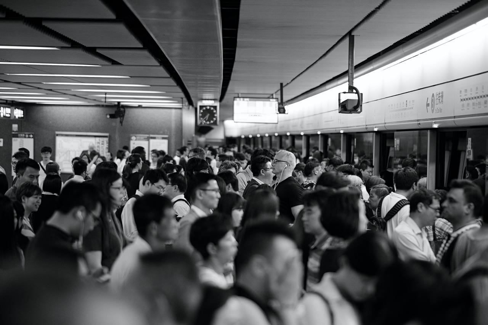

Местом неспешного транзита он оставался недолго. С 1945 по 1951 год население выросло примерно с 600 тысяч до более чем двух миллионов — его раздули люди, бежавшие от революции и войн на материке; на пике приходило около ста тысяч в месяц, с тем, что могли унести в руках. Они ставили на склонах посёлки из досок и толя, потому что больше было негде, и в рождественскую ночь 1953-го трущоба Шек-Кип-Мей выгорела, оставив к утру без крова около пятидесяти трёх тысяч человек. Из того пожара выросли переселенческие блоки — начало самой масштабной программы социального жилья во всей Британской империи, — а с ними особая арифметика выживания: каждая семья — самодостаточная единица, голову вниз и тяни. Когда нужда настолько всеобща, а ресурсов так мало, нормируется само внимание. Ты не вглядываешься слишком пристально в беду соседа — отчасти из деликатности, отчасти потому, что не можешь позволить себе её вместить. Приватность в таких тесных стенах — не стена. Это уговор смотреть в сторону.
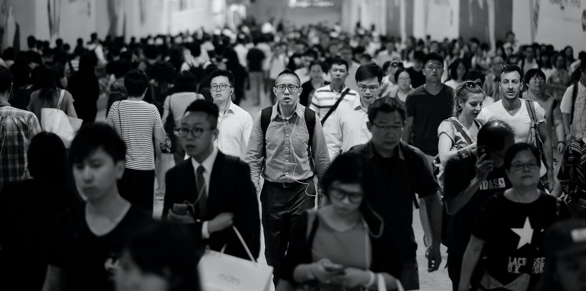
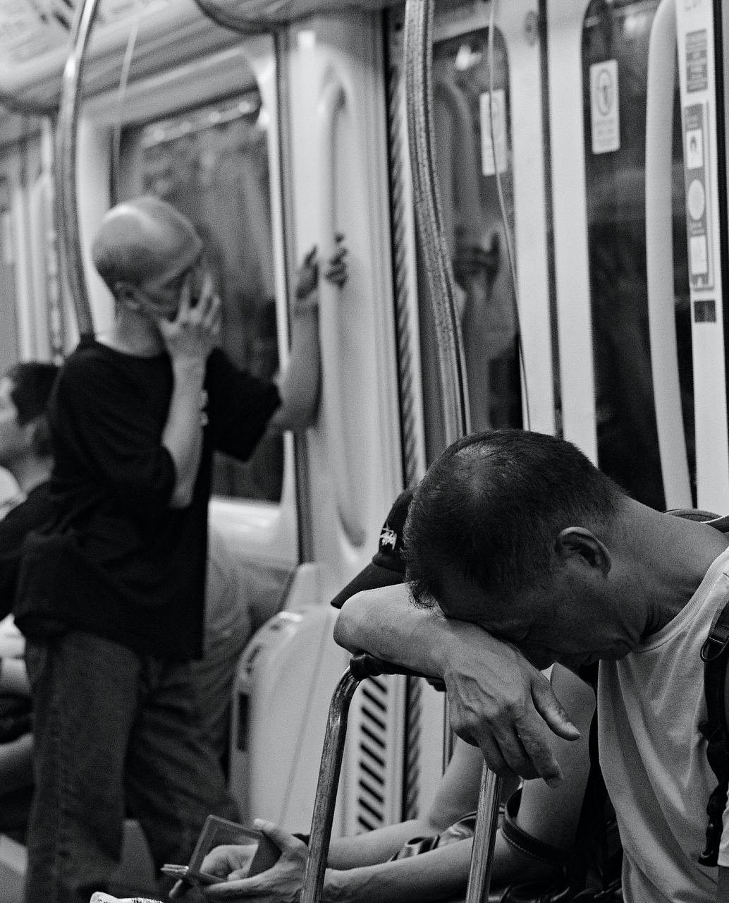
Самый полный символ этого парадокса стоял до 1993 года, пока бульдозеры наконец не вошли в Коулунский укреплённый город — единственный неуправляемый квартал, где, по некоторым подсчётам, на акр приходилось больше людей, чем где-либо на земле: десятки тысяч жили в лабиринте, который колониальное государство предпочитало не видеть и толком никогда им не правило. Предельная близость и полная невидимость на одних и тех же нескольких квадратных метрах. Укреплённого города больше нет, на его месте теперь тихий парк, но его логика не умерла — её лишь поделили на отсеки. Она живёт в перегороженных квартирах, в «клетках» и «гробах», где весь мир человека — отгороженная сеткой койка, а те, кто сложен над ним и под ним, — чужие, с которыми он годами будет делить стену и так и не познакомится. Близость здесь никогда не означала признания. Это никогда не было одним и тем же. Можно прожить жизнь, прижатым к другим, и остаться для них температурой и шумом.
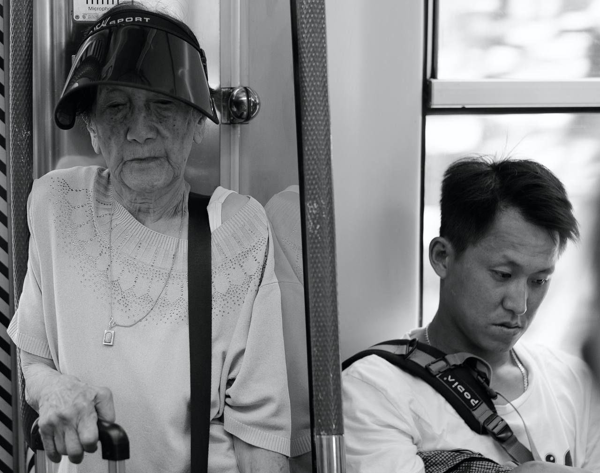
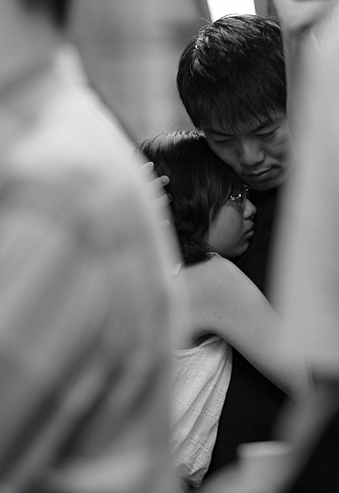
У темперамента, который из этого вырос, есть даже имя — и оно стало почти гражданским гимном. В 1972 году телесериал «Под Львиной скалой» вернул городу его собственный образ — простые работяги, что тянут без жалоб, надеются на себя, делают своё дело, — и «дух Львиной скалы» стал кратким именем целой этики самообладания. Не устраивай сцен. Неси сам. Под этим лежит более старая грамматика — 面子, «лицо»: принцип, по которому самое важное — горе, стыд, страх, нехватка денег — именно то, что держат подальше от поверхности, проживают наедине, чтобы публичное «я» осталось целым. Культура, выстроенная на этом, не лишена чувств. Она их переселяет. То, что в вагоне выглядит как толпа запечатанных, отсутствующих лиц, на деле — толпа, свободно говорящая на языке несказанного: каждый несёт внутренний мир, который этикет запрещает ему показывать, а тебе — о нём спрашивать. Пустота — это не пустота. Это сдержанность, затвердевшая до инстинкта.
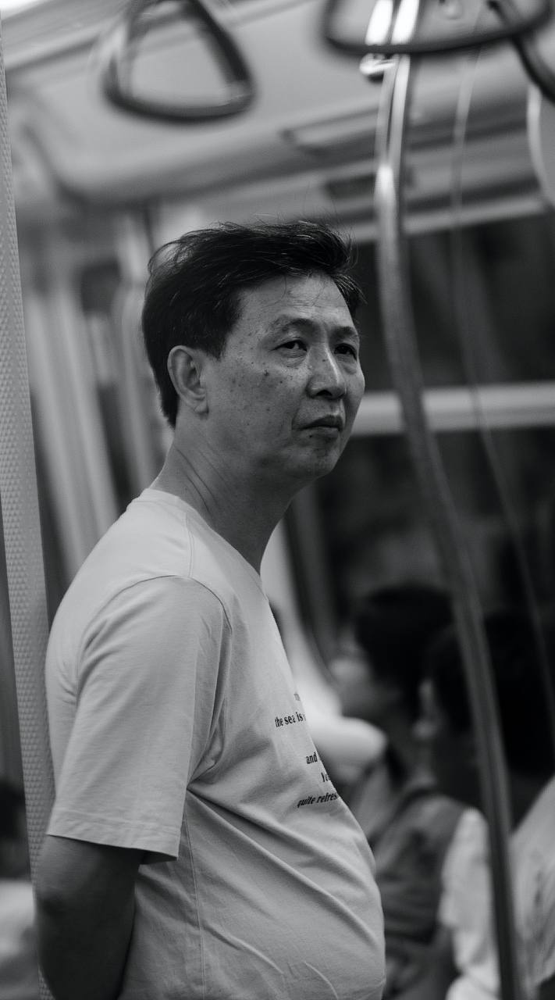
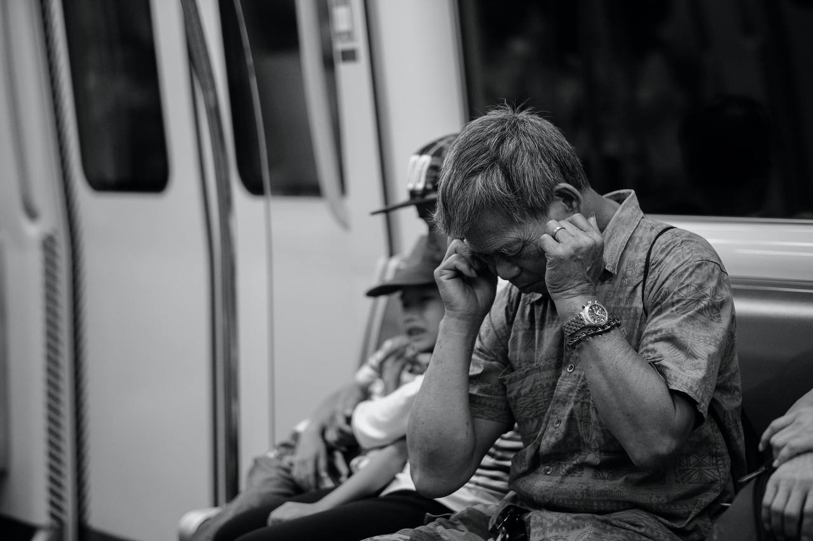
И здесь вежливость тихо оборачивается тем, у чего есть цена. Сегодня Гонконг — одно из самых неравных богатых обществ мира: коэффициент Джини до налогов и трансфертов около 0,539, один из самых высоких где-либо, — и у этого неравенства есть лицо, обычно пожилое, чаще женское. 執紙皮, сборщики картона, работают на тех же улицах над этими станциями; большинству за семьдесят, они согнуты над расплющенными коробками, за которые платят несколько центов за килограмм, и проскальзывают мимо почти любого официального счёта — кто беден и кто вообще здесь есть. Это совершенная выжимка всего наследства: люди, физически самые присутствующие в городе и меньше всего им учтённые, те, кого выученный рефлекс не-смотрения создан обходить. Нормировать признание было когда-то навыком выживания — способом пережить давку, которой никто не выбирал. Но привычка не знает, что её чрезвычайная пора кончилась. Она продолжается. И несосчитанные исчезают полнее всего не тогда, когда рядом никого, а когда рядом все — когда смотрение-в-сторону так отработано, что тело, согнутое над своим картоном, или спящее, пока эскалатор уносит город наверх мимо него, считывается как часть архитектуры.
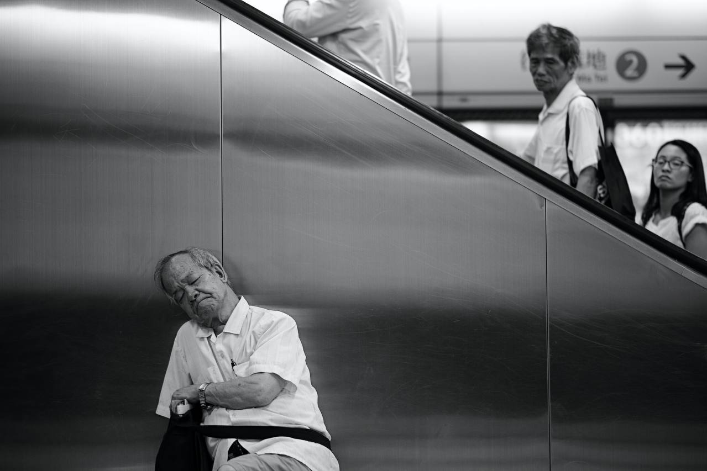
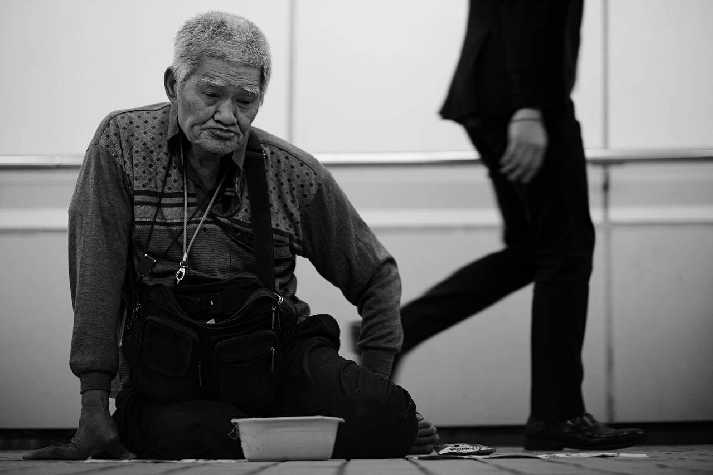
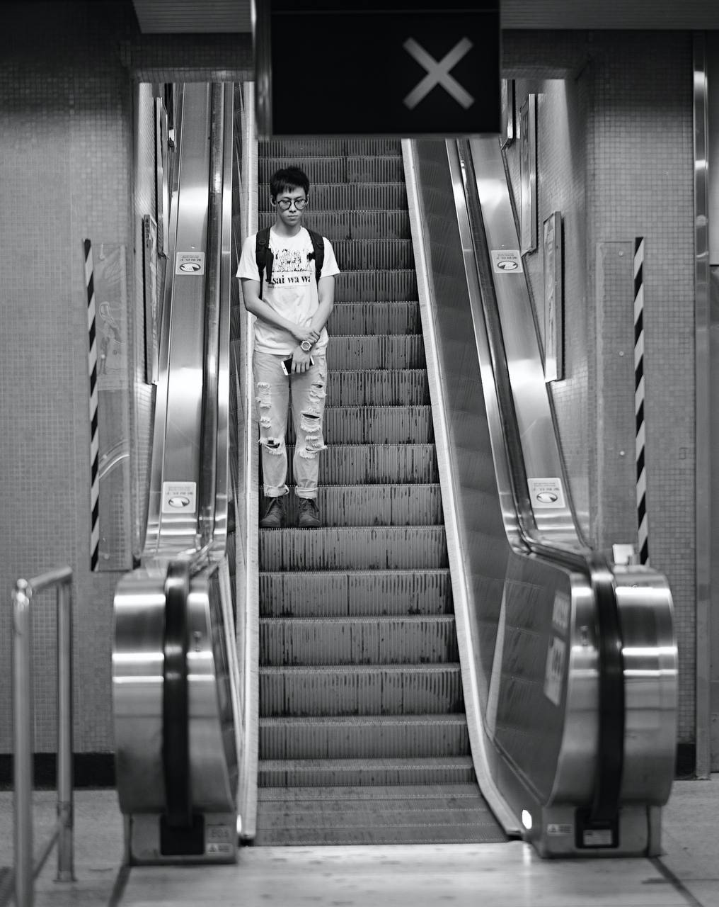
Именно это совершает фотография — и потому в ней есть что-то едва уловимо запретное, даже когда в кадре нет ничего драматичного. Поднять здесь камеру и удержать в ней незнакомца — значит довести до конца ту сделку, которую весь город условился откладывать: сказать ты здесь, я тебя вижу тому, кого история научила не ждать ни того, ни другого. Снимки никого не обвиняют; смотрение-в-сторону сложено из настоящих пожаров, настоящей тесноты и настоящего, разумного милосердия, и те, кто так живёт, не злы. Они наследники. Но есть среди всего этого один взгляд, который так и не выучил правило, — детский: он встречает объектив всем тем незащищённым вниманием, которое взрослые всю жизнь тратили и растратили. Вот к чему пытается вернуться камера. Не разоблачить кого-то. Просто посмотреть — целиком, хоть раз — на тех, мимо кого мы условились проходить, и оставить вопрос висеть в тёплом воздухе платформы, где-то между Chai Wan и mind the gap: что же это такое, о чём мы все условились молчать.
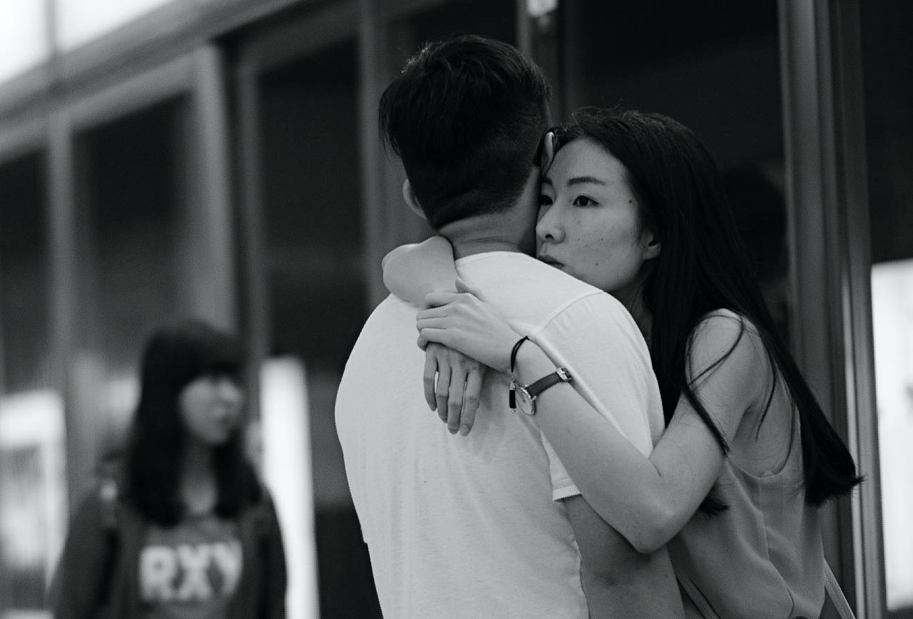
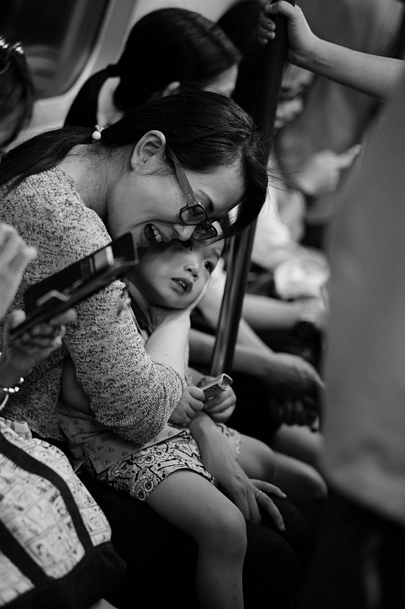
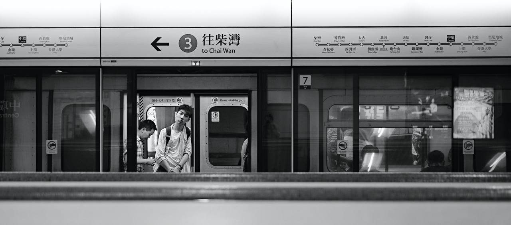